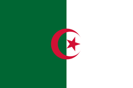
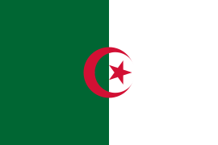
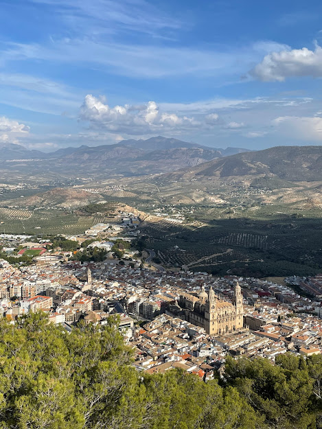
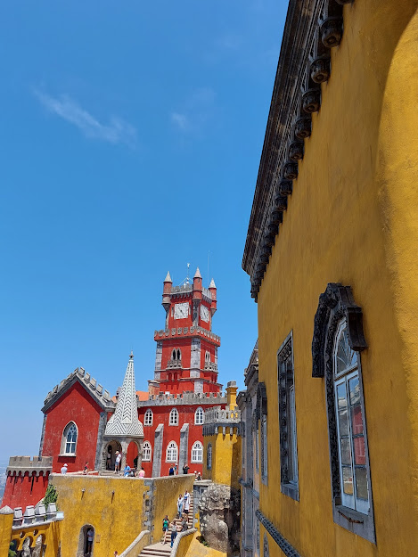
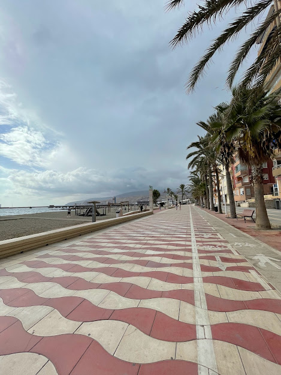
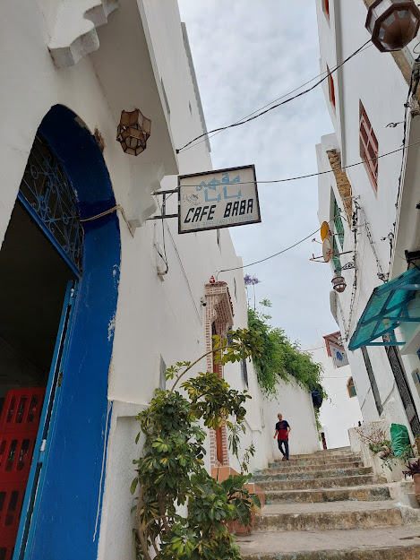
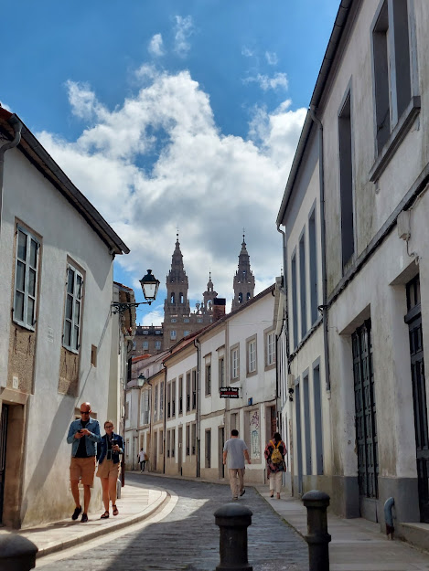
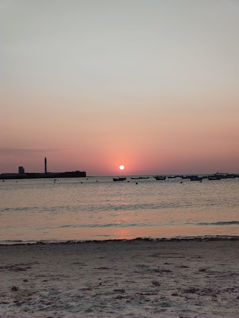

Nosotros somos Camello Loco
Una agencia de viajes en la que te garantizamos un compañero que va a ir a la par tuya descubriendo los mejores destinos.
Sorprendentes destinos desde:
Jaen
La provincia de los olivos, se siente el aroma en todas partes, con una arquitectura divina, podes subir al castillo de Santa Catalina y tener una vista panoramica unica de la ciudad como tambien de los campos de olivos, experiencias unicas.
Sintra
Sintra es lo mas cercano a un cuento pero en la vida real, animate a descubrir sus palacios de colores sus vistas imperdibles y su gran historia.
Almeria
Esta ciudad de costa tiene unas playas hermosas acompañado de una gastronomia muy buena y a la vez economica, perdete en bares de tapas con unas cañas o en las playas mas californianas de toda España.
Tanger
Ciudades misteriosas si las hay, cada pasillo, cada calle es una historia nueva por contar, con sus playas podes visitar la cueva de Hercules, tambien disfrutar de un buen Te de menta en el cafe Baba como lo hicieron los Rolling Stones.
Santiago de Compostela
Una ciudad que te llega al corazon, siendo punto de llegada de peregrinos hace siglos esta ciudad puede tocar tu corazon y hacerte sentir su historia, respira amor, tradicion y hogar, aparte de ser un paraiso del buen comer.
Cadiz
Una ciudad fundada en el S.XII con mucha historia en sus calles y mucha alegria en su gente, como si fuera poco ademas tienen unas playas de locura.